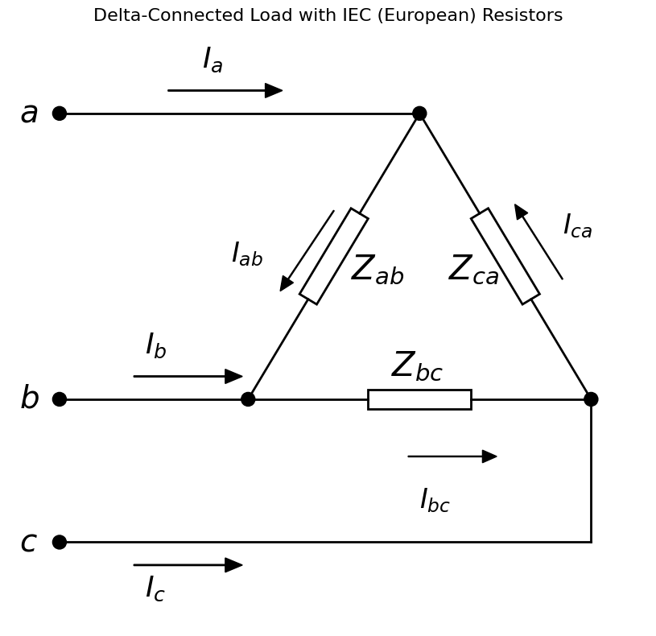
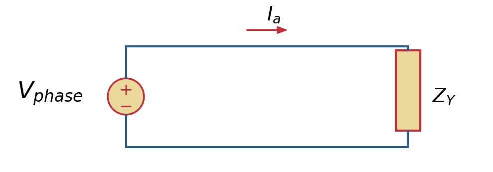
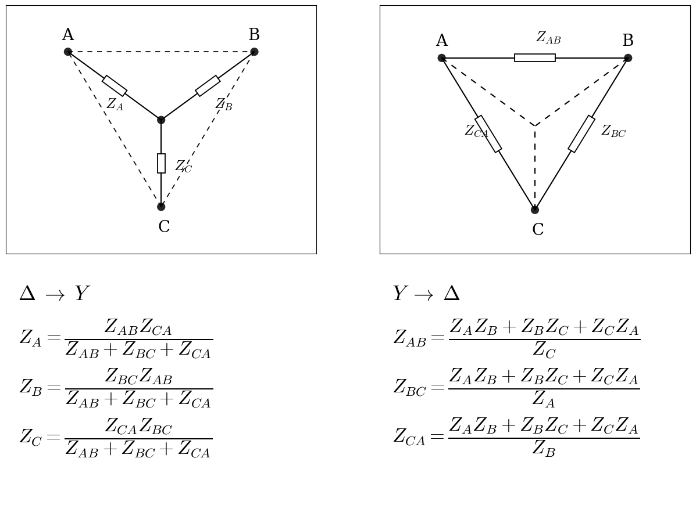
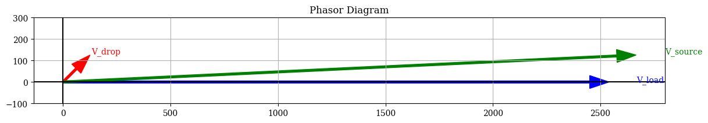
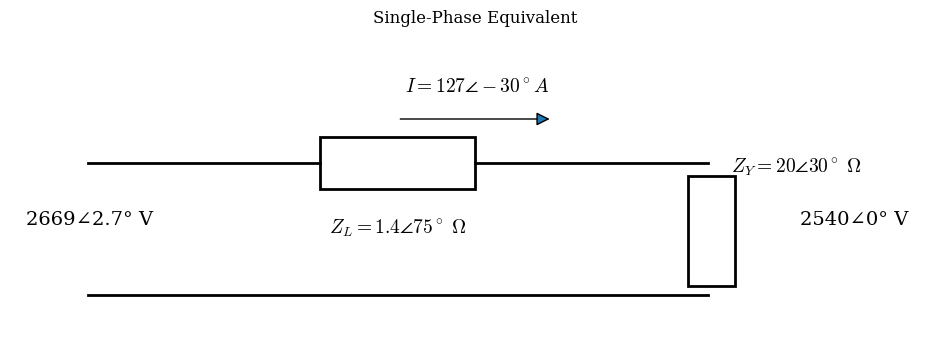

Per phase equivalent#
Laods can be connected in Y- or \(\Delta\)-connection. Balanced loads are often connected in \(\Delta\)

When analysing balanced 3-phase circuits it is not necessary to work with all 3 phases. We use a simplification of the 3-phases, represented with a per-phase equivalent. The per-phase equivalent consists of the voltage represented by its line-to-neutral potential, the line current, impedance (Y-connected) and a neutral connection of zero impedance. Then solve the circuit by KVL.

Impedance equivalent#
It is imperative that the impedance is represented by its Y-connection in a per-phase equivalent. \(\Delta\)- and Y-connected impedances are equivalent and can be transformed.
If we have a \(\Delta\)- connection it can be turned into Y-connection by:
If we have a Y- connection it can be turned into \(\Delta\)-connection by:

EXAMPLE 2.4#
The terminal voltage of a Y-connected load consisting of three equal impedances of \(20\angle30^{\circ}\Omega\) is 4.4 kV line to line. The impedance of each of the three lines connecting the load to a bus at a substation is \(Z_L = 1.4\angle75^{\circ}\Omega\).
Find the line-to-line voltage at the substation bus.
Load phase voltage = 2540.3 ∠0° V
Load current = 127.0 ∠-30.0° A
Line voltage drop = 177.8 ∠45.0° V
Substation phase voltage = 2669.0 ∠2.7° V
Substation line-line voltage = 4622.9 ∠32.7° V


Power in balanced 3-phase circuits#
If the magnitude of the voltages to neutral (V_p) for a Y-connected load is
and if the magnitude of the phase current (I_p) for a Y-connected load is
the total three-phase power is
where (\theta_p) is the angle by which the phase current (I_p) lags the phase voltage (V_p).
The magnitudes of line-to-line voltage (V_L) and line current (I_L) are related by
and
Substituting into the power equation gives
The total reactive power is
or
The apparent power is
For a (\Delta)-connected load,
and
The total three-phase power is
Substituting the (\Delta)-connection relationships gives
Similarly,
and
Thus, for balanced three-phase systems (whether Y-connected or (\Delta)-connected),